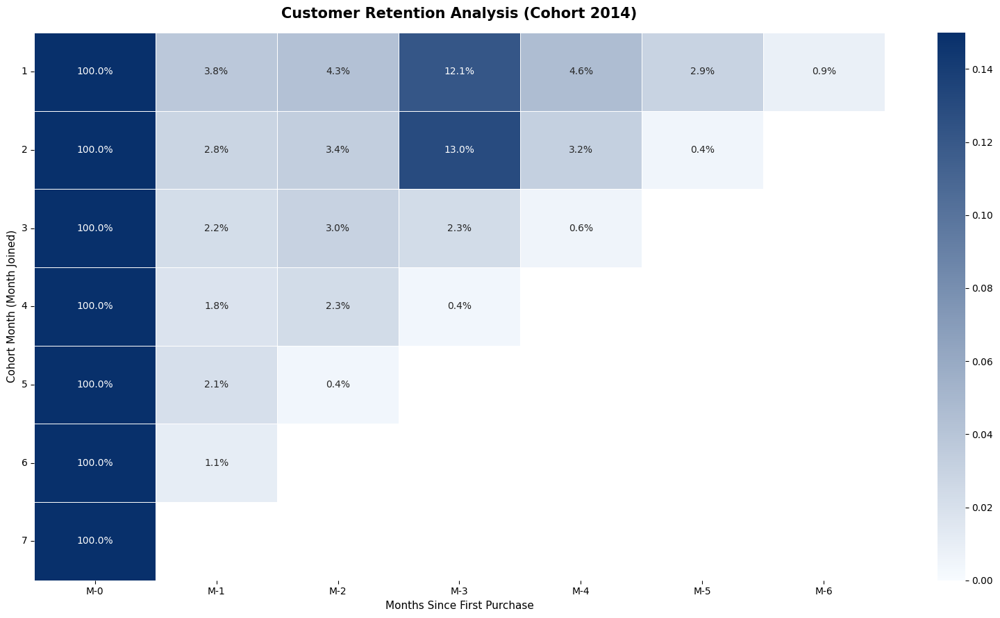
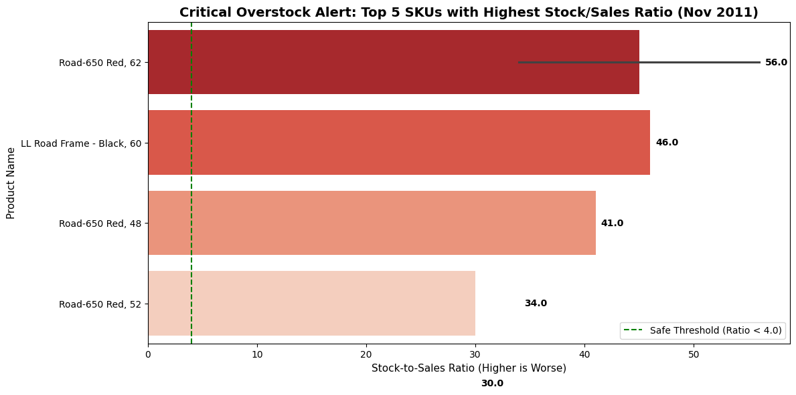

Bicycle Manufacturer Performance Analysis
An Advanced SQL project using the AdventureWorks dataset to perform comprehensive data analysis across Sales Performance, Customer Retention, and Inventory Optimization through 8 complex operational queries.
Project Overview
In this project, I performed an end-to-end data analysis on the AdventureWorks database, a comprehensive dataset simulating a large multinational manufacturing company. The business operates across multiple international regions, managing thousands of products, salespeople, and complex supply chain records.
The primary objective of this project is to demonstrate advanced SQL capabilities in solving complex business problems. Through the execution of 8 operational queries, I explore various business domains, focusing heavily on Sales Performance, Customer Retention, and Inventory Optimization. This page highlights two of the most critical deep-dive case studies from that analysis.
Case Study 1: Customer Retention Strategy (Cohort Analysis)
The Business Challenge
The marketing department faced rising Customer Acquisition Costs (CAC) but had no visibility into user lifecycle behavior. The key objective was to identify the exact "churn point" — the moment customers stop coming back — in order to shift budget from acquisition to targeted retention.
My Approach
ROW_NUMBER() OVER (PARTITION BY
customer_id ORDER BY order_month) to identify each customer's first-ever
order, forming the cohort baseline.month_diff between each subsequent order and the cohort's join month,
enabling period-over-period retention tracking.
Solution
WITH successful_order AS (
SELECT
EXTRACT(MONTH FROM ModifiedDate) order_month,
CustomerID customer_id
FROM `adventureworks2019.Sales.SalesOrderHeader`
WHERE EXTRACT(YEAR FROM ModifiedDate) = 2014 AND Status = 5
ORDER BY customer_id, order_month
),
rank_time_order AS (
SELECT *,
ROW_NUMBER() OVER(PARTITION BY customer_id ORDER BY order_month) order_time
FROM successful_order
),
first_order AS (
SELECT order_month AS month_join, customer_id
FROM rank_time_order WHERE order_time = 1
),
find_month_diff AS (
SELECT DISTINCT order_month, month_join, a.customer_id,
(order_month - month_join) month_diff_num
FROM successful_order a
INNER JOIN first_order b ON a.customer_id = b.customer_id
ORDER BY month_join, order_month
)
SELECT
month_join,
CONCAT('M-', month_diff_num) month_diff,
COUNT(customer_id) customer_count
FROM find_month_diff
GROUP BY month_join, CONCAT('M-', month_diff_num)
ORDER BY month_join, month_diffResults
The query output is a cohort matrix — each row is a join month, each column is
M-0 through M-5, and the value is the number of customers still
active at that period. A sample of the output:
| month_join | M-0 | M-1 | M-2 | M-3 | M-4 | M-5 |
|---|---|---|---|---|---|---|
| 1 (Jan) | 388 | 15 | 10 | 46 | - | - |
| 2 (Feb) | 338 | 15 | 41 | - | - | - |
| 3 (Mar) | 414 | 16 | - | - | - | - |
| 4 (Apr) | 390 | 14 | - | - | - | - |
| 5 (May) | 544 | 6 | - | - | - | - |
| 6 (Jun) | 478 | 5 | - | - | - | - |
Key Insights
- The "One-and-Done" Problem: Across all cohorts, < 5% of customers return for a second purchase (M-1). Retention quality drops from 3.8% (Jan) to 1.1% (Jun).
- The "90-Day Resurrection" Pattern: Customers acquired in Jan/Feb showed a 300% spike in activity at Month 3 (12–13%), indicating strong quarterly cyclical demand from this segment.

Figure 1 — Cohort retention heatmap showing sharp drop after M-0, with a notable ~3x resurgence at M-3 for Jan/Feb cohorts.
Case Study 2: Inventory Optimization Strategy
The Business Challenges
- Rising Warehousing Costs: Increasing storage fees from stagnant inventory in specific product lines.
- Lost Revenue: Despite high overall stock, popular items frequently experienced stockouts — leading to missed sales.
- Lack of Visibility: The supply chain team relied on static inventory counts, failing to account for real-time sales velocity.
My Approach
SalesOrderDetail and
SalesOrderHeader.
WorkOrder records.
Solution
WITH
sales_2011 AS (
SELECT
EXTRACT(MONTH FROM OrderDate) mth,
EXTRACT(YEAR FROM OrderDate) yr,
detail.ProductID,
p.Name,
SUM(OrderQty) sales
FROM `adventureworks2019.Sales.SalesOrderDetail` detail
INNER JOIN `adventureworks2019.Sales.SalesOrderHeader` header
ON detail.SalesOrderID = header.SalesOrderID
INNER JOIN `adventureworks2019.Production.Product` p
ON detail.ProductID = p.ProductID
WHERE EXTRACT(YEAR FROM OrderDate) = 2011
GROUP BY 1, 2, 3, 4
),
stock_2011 AS (
SELECT
EXTRACT(MONTH FROM o.ModifiedDate) mth,
o.ProductID,
p.Name product_name,
SUM(StockedQty) stock
FROM `adventureworks2019.Production.WorkOrder` o
INNER JOIN `adventureworks2019.Production.Product` p
ON o.ProductID = p.ProductID
WHERE EXTRACT(YEAR FROM o.ModifiedDate) = 2011
GROUP BY 1, 2, 3
)
SELECT
sa.mth, sa.yr, sa.Name,
sales, stock,
ROUND((stock / sales), 1) ratio
FROM sales_2011 sa
LEFT JOIN stock_2011 st ON sa.mth = st.mth AND sa.ProductID = st.ProductID
ORDER BY 1 DESC, 7 DESCResults
The query output ranks every product by its Stock-to-Sales Ratio for each month. The top offenders in November 2011 (sorted by highest ratio):
| Month | Product Name | Sales | Stock | Ratio | Status |
|---|---|---|---|---|---|
| 11 | Road-650 Red, 62 | 1 | 56 | 56.0 | Overstock |
| 11 | Road-650 Red, 44 | 1 | 34 | 34.0 | Overstock |
| 11 | Road-650 Red, 48 | 1 | 27 | 27.0 | Overstock |
| 11 | Road-150 Red, 56 | 28 | 4 | 0.1 | Stockout Risk |
Key Insights
- Critical Overstock Discovery: In November 2011, the Road-650 Red, 62 model reached an alarming ratio of 56.0 — 56 units sitting idle against only 1 sold. At current velocity, that is over 4 years of excess supply.
- Stockout Risk: The Road-150 series dropped to a ratio of 0.1 (Stock 4 vs. Demand 28), signaling a severe inability to fulfill orders during peak months and direct revenue loss.

Figure 2 — Top 5 products by Stock-to-Sales Ratio in 2011. The Road-650 series dominates with ratios indicating years of idle supply.
Explore the Full Project
Interested in the complete SQL codebase, data dictionaries, and execution instructions? Visit the GitHub repository for this project to dive deeper.
View Source Code & Data